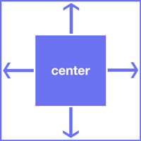
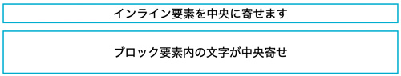
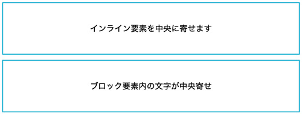
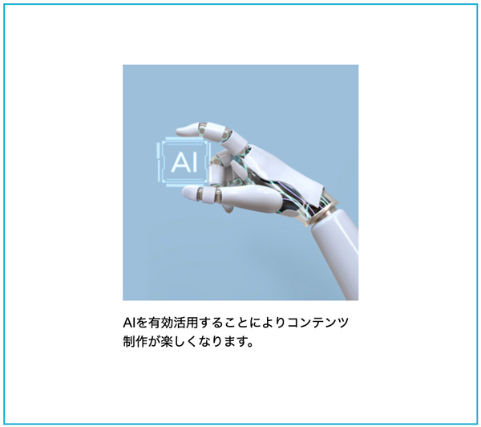

要素を中央寄せ

- プロンプト例
CSSで要素を画面の中央に配置する方法
CSSで中央に寄せができるプロパティ4選
- flexbox
- grid
- position
- text-align
✅ 方法①：Flexbox（最もおすすめ・簡単）
【css】
.container { display: flex; justify-content: center; /* 横中央 */ align-items: center; /* 縦中央 */ height: 100vh; /* 画面の高さ */ }
【html】
<div class="container"> <div class="box">中央</div> </div>
特徴
- モダンCSSの定番
- レスポンシブ対応しやすい
- 実務で一番使われる
✅ 方法②：Grid（最もシンプル）
.container { display: grid; place-items: center; height: 100vh; }
特徴
- 1行で中央寄せ可能
- レイアウトがシンプルな場合に最適
✅ 方法③：position + transform（昔からの定番）
.box { position: absolute; top: 50%; left: 50%; transform: translate(-50%, -50%); }
特徴
- 古いブラウザにも対応
- モーダル・ポップアップ表示で今もよく使う
✅ 方法④：text-align + line-height（縦横中央 ※条件付き）
.box { text-align: center; line-height: 300px; height: 300px; }
特徴
- テキストだけ中央にしたい時限定
- 高さ固定が必要
🎯 どれを使うべき？
| 用途 | おすすめ |
|---|---|
| 通常レイアウト | Flexbox |
| 1要素を完璧に中央 | Grid |
| モーダル / ダイアログ | position + transform |
| テキストのみ | line-height |
🔥 実務で一番使われる形（コピペOK）
.center { display: flex; justify-content: center; align-items: center; }
記述例
1.【flexbox】プロパティで左右中央配置
flexboxで左右中央寄せする方法
- 「justify-content」は水平方向に対して揃え位置を指定することができます
.parent { display: flex; justify-content: center; margin: 10px 0; border: 2px solid #0bb1d2; }

flexboxで上下中央寄せする方法
<div class="parent"> <span>インライン要素を中央に寄せます</span> </div> <div class="parent"> <p>ブロック要素を中央寄せます</p> </div>
- 「flexbox」での「align-items」は、高さ指定が必要になります
- 「margin」で２つのブロックの間を開けています（マージンの相殺）
.parent { display: flex; align-items: center; justify-content: center; height: 100px; margin: 10px 0; border: 2px solid #0bb1d2; }

画像を上下中央寄せする方法
<div class="parent"> <img src="ai.jpg" alt=""> </div>
img { width: 100%; max-width: 350px; } .parent { display: flex; justify-content: center; align-items: center; width: 100%; height: 100vh; /* ブラウザーの高さ */ }
※ブラウザーの表示上下中央に配置されています。
2.【grid】プロパティで左右中央配置
- 親要素「parent」に「display: grid;」を指定し、子要素を上下左右の中央に配置することができます
<div class="parent"> <img src="img/ai.jpg" alt=""> <p>AIを有効活用することによりコンテンツ制作が楽しくなります。</p> </div>
- 「place-content: center;」で、子要素が複数あっても子要素のグループが上下左右の中央に配置されます
- 「p」は、画像に合わせた幅指定をしました
.parent { display: grid; align-items: center; place-content: center; width: 600px; height: 50vh; margin: auto; border: 2px solid #0bb1d2; } p { width: 300px; }

3.【position】プロパティで左右中央配置
- 親要素に「position: relative;」
- 子要素に「position: absolute;」とmargin: auto; を設定
- widthとheightの値は必須
<div class="content"> <div class="parent"> <img src="img/ai.jpg" alt=""> <p>AIを有効活用することによりコンテンツ制作が楽しくなります。</p> </div> </div><!-- /.content -->
.content { position: relative; width: 600px; height: 600px; margin: auto; border: 2px solid #0bb1d2; } .parent { position: absolute; top: 0; right: 0; bottom: 0; left: 0; margin: auto; width: fit-content; height: fit-content; } p { width: 300px; }
4.【text-align】プロパティで左右中央寄せ
- text-alignでブロック要素などの水平方向に対して配置を決めることができます
- 文字の上下の空きは「line-height」の初期値「1.5」が適用されているからです
<div class="parent"> <span>インライン要素を中央に寄せます</span> </div> <div class="parent"> <p>ブロック要素内の文字が中央寄せ</p> </div>
- 「margin」で２つのブロックの間を開けています（マージンの相殺）
.parent { width: 100%; margin: 10px 0; border: 2px solid #0bb1d2; text-align: center; }